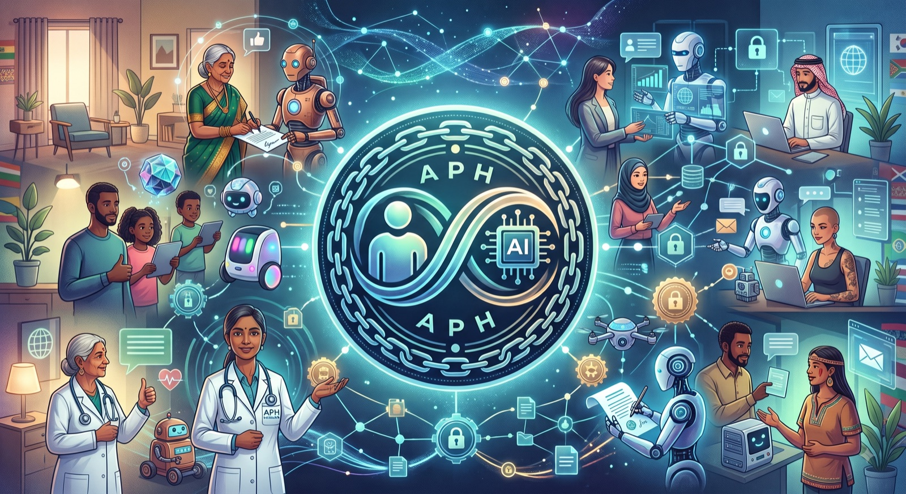

Agents already act on our behalf. APH gives every action a verifiable credential proving a specific human authorized it — checkable by any recipient, across vendors and organizations, with nothing but public standards and public keys.

Three parties, one credential, zero shared platform. The human's key never leaves their device — which is why a notary can be run by anyone, and why its word alone is never mistaken for the human's.
A person signs a Delegation Mandate with their own key: which agent, which channels, what scope, for how long. Revocable at any time — and revocation reaches strangers in minutes through a published status list.
When the agent acts, a Notary Service checks the action against the mandate, records the decision, and countersigns a W3C Verifiable Credential binding the exact message bytes, channel, and recipient to that authority.
The recipient resolves the notary's public key from
DNS or did:web — infrastructure they already
trust — and checks every signature offline. No account with the sender's
platform. No prior relationship. No trust in the agent's runtime.
One reference implementation in Rust, one fully independent implementation in TypeScript — they mint and verify each other's envelopes — and bindings that hand the reference to four ecosystems.
cargo add aph-core # types, validation, signing cargo add aph-resolver # DNS + did:web key discovery
go get github.com/squillo/aph/interpreters/go
git clone https://github.com/squillo/aph cd aph/interpreters/typescript npm install && npm run build && npm test
# Python (pyo3) cargo test -p aph-py # Elixir (rustler NIF) cd interpreters/elixir && mix test
Validate your first envelope in one command:
cargo run -p aph-cli -- validate examples/principal_signed_envelope.json
— a published credential carrying four real signatures your own code can re-verify.
Nothing novel where novel is dangerous: no new cryptography, no new trust anchors — the same primitives that already secure email authentication and the credential web, composed.